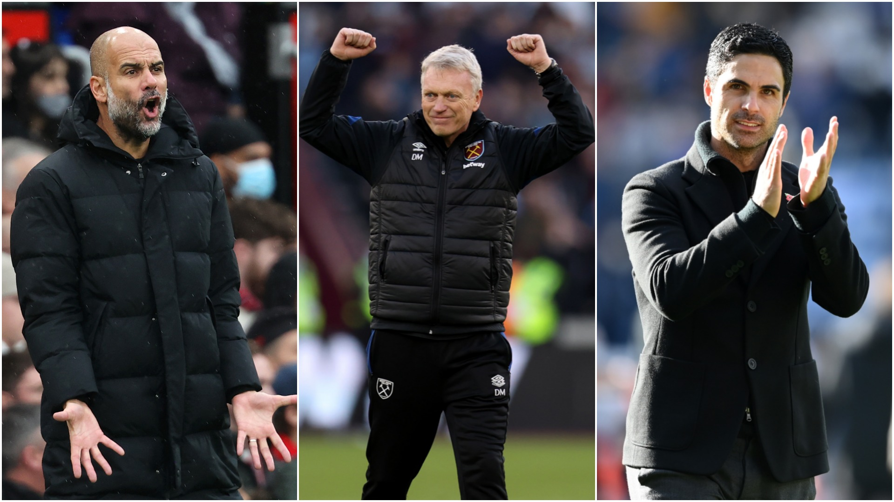

ខាងក្រោមនេះជាអ្នកចាត់ការទាំងប្រាំរូប ដែលអាចទទួលចានពានមួយនេះ៖

- លោក Mikel Arteta អ្នកចាត់ការរបស់ក្លឹប Arsenal
- លោក Pep Guardiola អ្នកចាត់ការរបស់ក្លឹប Manchester City
- លោក Jurgen Kloop អ្នកចាត់ការរបស់ក្លឹប Liverpool
- លោក Graham Potter អ្នកចាត់ការរបស់ក្លឹប Brighton & Hove Albion
- លោក Dean Smith អ្នកចាត់ការរបស់ក្លឹប Aston Villa
អំពីយើង
ជួបគ្នាបណ្ដាញសង្គម
ភ្ជុំបិណ្ឌ ២០២១